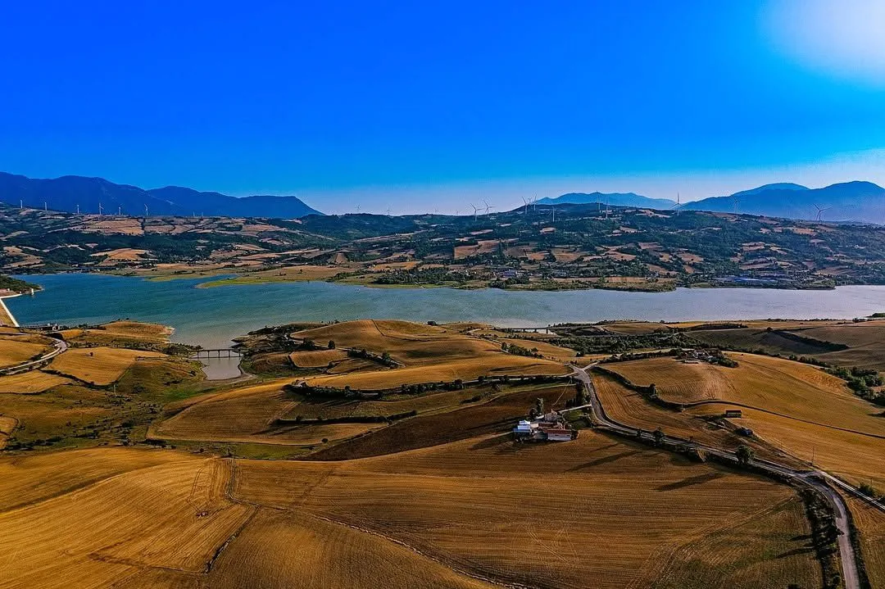

Il nostro terroir
Rigore scientifico,radici nel territorio
Il carattere di Conza della Campania, un piccolo lotto alla volta.
Le origini
Primala scienza
Vie del Lago unisce lo sguardo del mondo del vino al rigore della ricerca. Alla base ci sono gli studi in Agraria e la conoscenza dei sistemi biologici.
Qui l'apicoltura è analisi, zonazione e osservazione di piante e clima. Ogni decisione, da dove mettere le arnie a come seguire le fioriture, segue un metodo: l'alveare è un laboratorio vivo, che riflette lo stato dell'ambiente intorno.
Vogliamo interpretare un ecosistema, trasformarlo in un piccolo lotto riconoscibile e custodirlo con la precisione di chi studia la natura prima di raccoglierla.

La scelta stanziale
Un alveare,un luogo
Molti apicoltori spostano le arnie per seguire le fioriture. Noi no: non portiamo le api in altre regioni e non mescoliamo nettari di origini diverse.
Come i vigneti singoli nelle grandi zone del vino, ogni alveare interpreta una sola porzione di territorio. Il suo miele è l'istantanea di quella fioritura, di quella stagione, di quel clima.
È una scelta che limita la produzione e ne aumenta il valore. Così nasce il nostro miele cru: tracciabile, legato a un luogo, diverso a ogni lotto.
Il suolo e il lago
Un confinebiologico
Nel cuore dell'Irpinia, il substrato argilloso, la vicinanza del lago e l'assenza di agricoltura intensiva creano un mosaico vegetale intatto.
L'argilla trattiene umidità e micronutrienti, influenza le piante e quindi la composizione del nettare. Ne viene una materia prima con una struttura e un'espressione del territorio riconoscibili.
Un mattino di maggio
L'albasull'apiario Priscilla
Alle cinque e mezza di mattina, a maggio, il Lago di Conza è ancora avvolto nella nebbia bassa della Valle dell'Ofanto. Le prime api escono dagli alveari prima che il sole superi la cresta dell'Appennino: sanno già dove andare.
La sulla è in fiore da tre settimane, ma non ha ancora raggiunto il picco. Il nettare è più concentrato nelle ore fresche. Le api bottinano in silenzio su una prateria argillosa che non ha mai conosciuto erbicidi. L'odore è selvatico, appena erbaceo: è l'odore del miele che si sta formando, in questi melari, su questo suolo.
La luce radente, l'aria umida, il profumo della sulla: è questa la materia prima. Un miele di sulla del Lago di Conza non può nascere altrove. Il territorio non si porta in giro: si custodisce.
